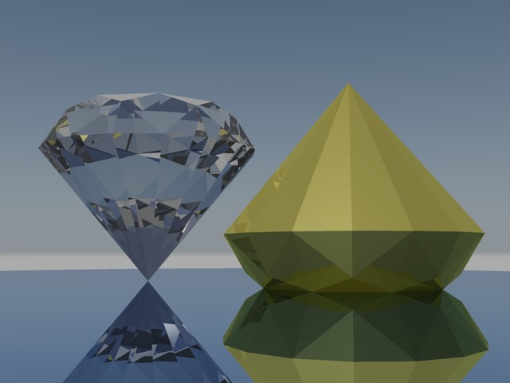

最看常常看到論壇朋友 志強哥 的3D作品分享，尤其在看到這篇 建模練習－－鑽石 覺得很有趣，這時候想想看有沒有什麼指令可以快速完成~
記得之前有使用過2011版本的程序曲面(AutoCAD 2011 Surface 程序曲面)，裡面有個 雕刻 SURFSCULPT指令，這個指令更是神奇~
所以趕緊來試試可行性，皇天不負苦心人經過練習與測試，可以做到類似鑽石切面的效果


但是還沒能做到八心八箭(請期待第2回合)，在這裡先跟大家分享成果影片!
👇影片
https://youtu.be/ReUFkDfT0KY?si=xeO4EKWOtibEmagy
摘要 SURFSCULPT指令 自動結合和修剪包圍無縫區域的曲面的集合，以建立實體。
注意事項:曲面封閉的區域必須是無縫的，且曲面連續性必須為 G0，否則 SURFSCULPT 指令無法完成。
最後還是一句老話，新版本新功能新優勢，AutoCAD目前在3D領域中可以說是已經有了一席之地，未來大家可從論壇所有的3D作品細細品嚐及了解~